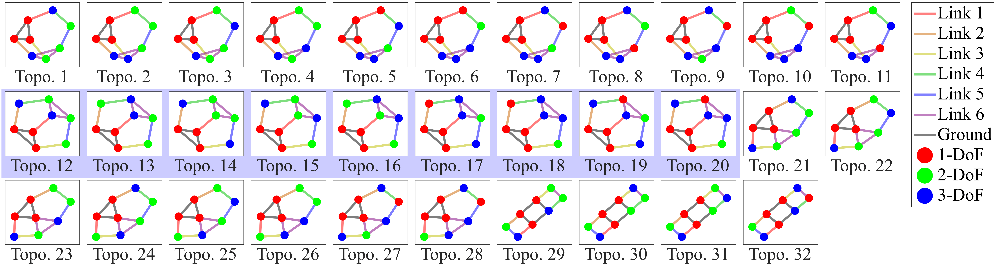
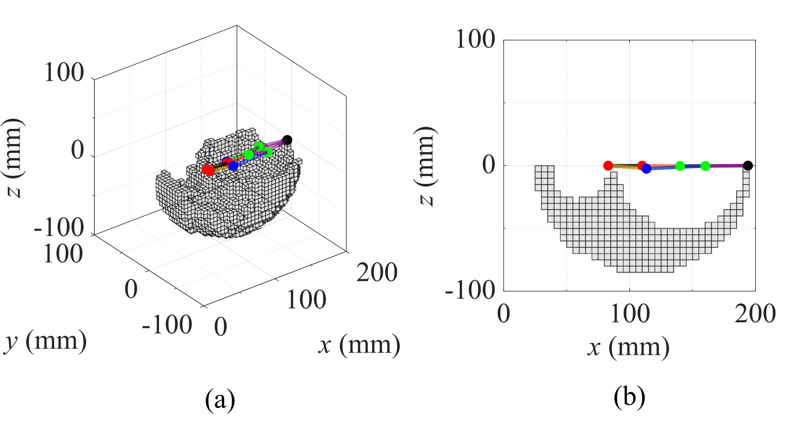
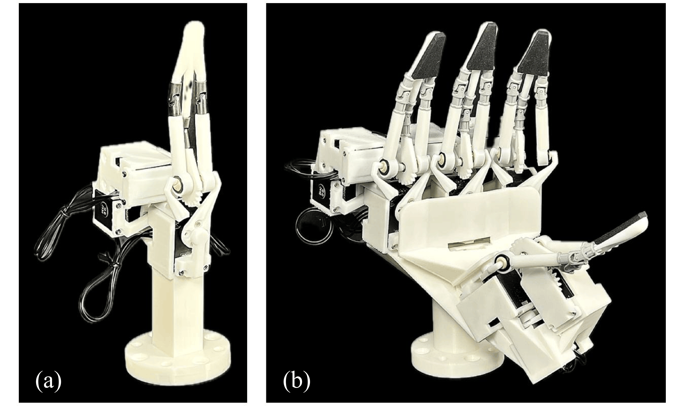
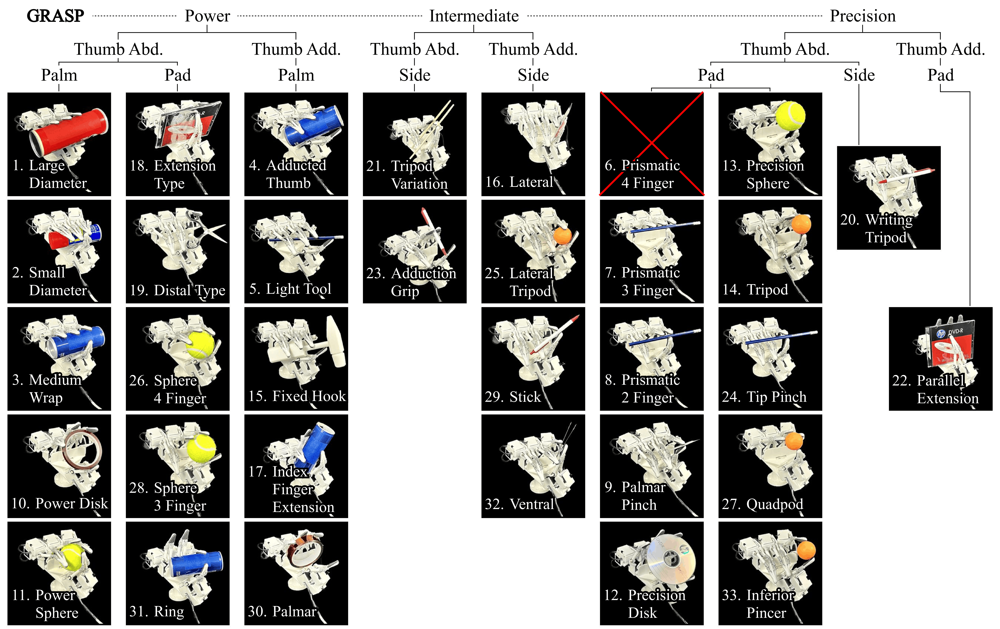
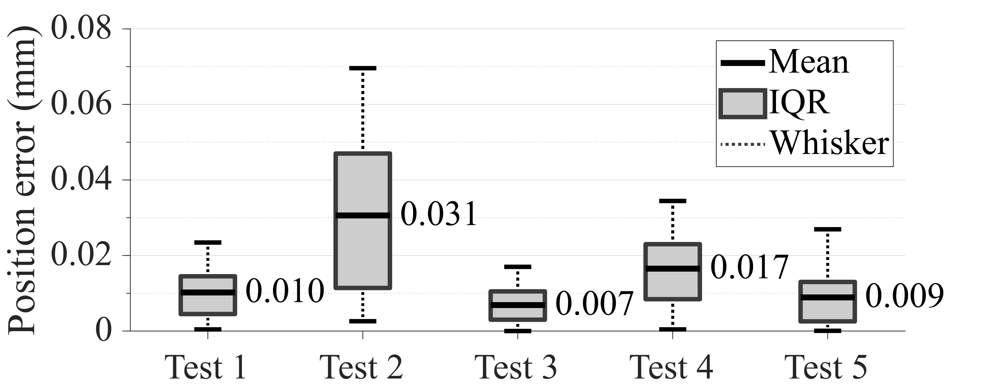
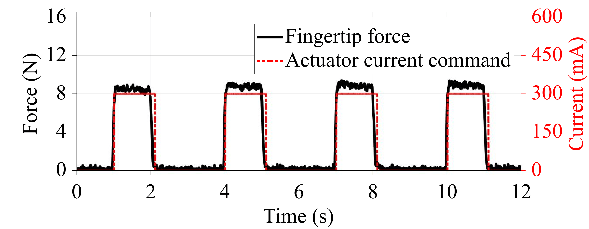
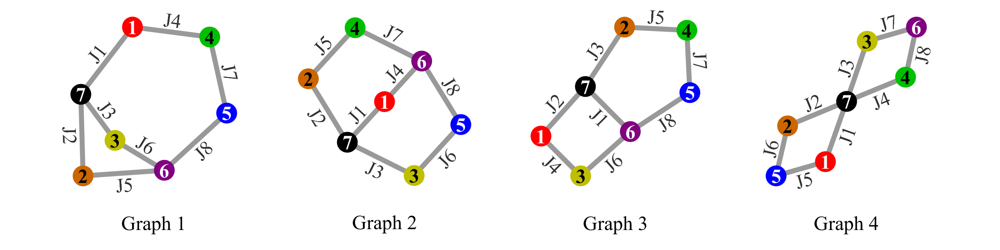
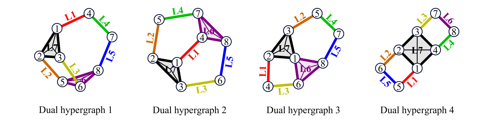

Topology-to-Dimension Synthesis of a Structurally Minimal 3-DoF Closed-Chain Robotic Finger
Motivation: beyond decoupled anthropomorphism
Linkage-driven robotic fingers are attractive because they can place actuators proximally, reduce distal inertia, and avoid tendon-specific nonidealities such as friction, slack, and hysteresis. Earlier linkage fingers were mostly planar 1-DoF FE mechanisms, followed by planar 2-DoF FE mechanisms or planar FE modules mounted on an AA stage. More recent 3-DoF linkage fingers typically construct a 2-DoF MCP base for FE and AA, then integrate an additional planar mechanism to complete 2FE+AA motion.
This anatomical decomposition makes the mechanism intuitively human-like and simplifies independent joint-level control. However, decoupling each anatomical motion into a separate sub-mechanism can require more links and joints than the minimum needed to realize the same three functional degrees of freedom.
| Conventional 3-DoF linkage-finger | Proposed topology-to-dimension paradigm |
|---|---|
| Decouple MCP FE, IP FE, and AA into interpretable sub-mechanisms. | Synthesize one unified spatial closed chain that directly realizes three functional DoF. |
| High anthropomorphic similarity and easier independent control. | Lower structural complexity and a non-conventional finger morphology. |
| Additional links and joints are often introduced as dexterity increases. | Minimal link-joint family is selected first, then dimensions are optimized for usable workspace. |
Topology-to-Dimension Design Pipeline
1Topology selection
The topology search starts from the spatial Grübler mobility equation, DoF = 6(nl - 1) - Σ(6 - fj), and enumerates link-joint combinations satisfying exactly 3-DoF.
Algebraic mobility is then screened for functional usefulness. A 3-link-3S example shows why a mechanism can satisfy DoF = 3 mathematically while producing axial spins on S-S links that do not generate independent distal output motion. Under the additional requirement that three 1-DoF actuators be mountable on the ground link, the minimum remaining family is 7 links / 8 joints, instantiated as either 3R3U2S or 4R1U3S.
Additional topology-level over-constraint screening and a bilateral symmetry condition, imposed to reflect the symmetric structure of a robotic finger, further reduce the admissible set to two mechanism-topology candidates: topology 14 and topology 16. Among them, topology 14 is selected because its higher-DoF joints are located closer to the base, which is expected to provide a larger reachable fingertip workspace after dimensional optimization.

Seven-link/eight-joint topology enumeration used for topology selection.
2Dimensional optimization
A structurally minimal closed-chain finger is strongly coupled and tends to have a small workspace. After fixing the topology, the geometry is therefore optimized to maximize fingertip workspace while preserving an anthropomorphic envelope.
- Objective 1: maximize voxelized 3D fingertip workspace volume.
- Objective 2: maximize pixelized 2D workspace area on the sagittal symmetry plane.
- Constraints: mirror symmetry, monotonic link progression from palm to fingertip, sagittal bending limits, and a finger-sized design domain.
- Search: NSGA-II is used to identify a Pareto-optimal compromise design, which is then fabricated as a physical finger and assembled into a four-finger hand.


(LEFT) Optimized fingertip workspace of the selected Pareto-optimal mechanism. (RIGHT) Fabricated finger mechanism and four-finger robotic hand assembly.
3Functional validation
Whole-hand grasp capability

Whole-hand grasp postures evaluated based on the GRASP taxonomy. The assembled four-finger robotic hand performs 32 of the 33 grasp types.
Motion repeatability

Repeatability results for five predefined motion tests.
Force capacity

Measured fingertip force capacity under a constant-current command.
APPENDIX: Topology enumeration details
A. Link-node / joint-edge simple graphs
The initial topology enumeration is performed using an ordinary simple-graph representation.
- Node definition: each node represents one rigid link.
- Edge definition: each edge represents one joint connecting two links.
- Purpose: this representation is used to enumerate admissible seven-link/eight-joint connection patterns before assigning specific joint types.
- Graph-level filtering: connectivity, minimum-degree, and short-cycle constraints are applied to remove graph structures that are unsuitable as a single closed-chain finger mechanism.

B. Joint-node / link-hyperedge dual representation
The enumerated simple graphs are converted into a dual hypergraph representation for mechanism-level interpretation.
- Node definition: each node represents one joint.
- Hyperedge definition: each hyperedge represents one rigid link connecting all joints incident to that link.
- Reason for conversion: a rigid link can be connected to more than two joints, which cannot be represented as a single ordinary edge but can be represented naturally as one hyperedge.
- Visual interpretation: a triangle or internally crossed quadrilateral in the dual drawing should be interpreted as one multi-joint rigid link, not as several separate links.

C. Enumerated and selected mechanism topologies
After graph enumeration and dual conversion, specific joint types are assigned and the resulting mechanism topologies are screened.
- Joint-type assignment: candidate topologies are instantiated using the minimum 3-DoF joint-type families, including 3R3U2S and 4R1U3S.
- Isomorphism handling: equivalent joint-type assignments are grouped so that duplicated mechanism topologies are not counted repeatedly.
- Topology-level feasibility: candidates that are likely to introduce over-constraint or functionally ineffective internal motions are removed.
- Symmetry condition: bilateral symmetry is imposed to reflect the intended finger structure, which bends primarily on a sagittal plane while retaining abduction/adduction capability.
- Final candidates: after these screenings, the admissible set is reduced to two mirror-symmetric candidates: topology 14 and topology 16.
- Selected topology: topology 14 is selected because its higher-DoF joints are located closer to the base, which is expected to provide larger distal motion amplification and a larger reachable fingertip workspace after dimensional optimization.